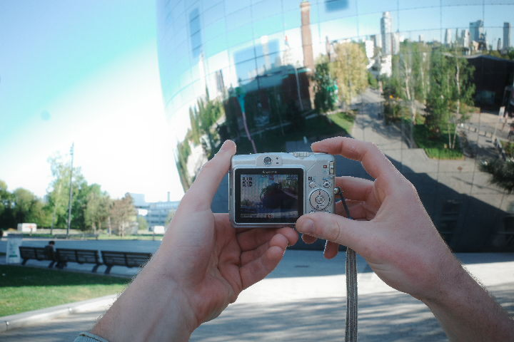
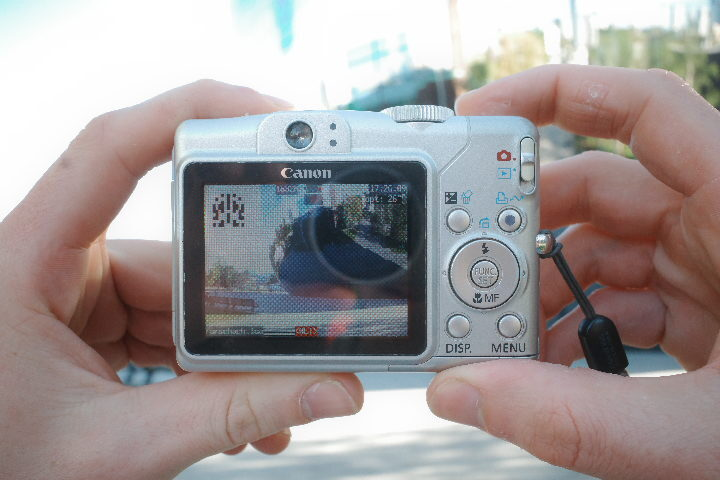
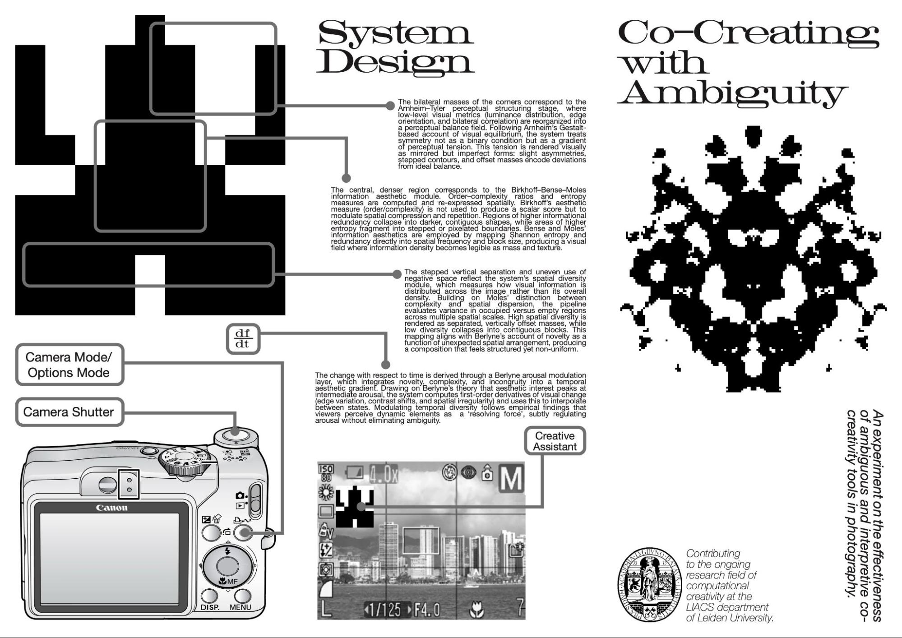
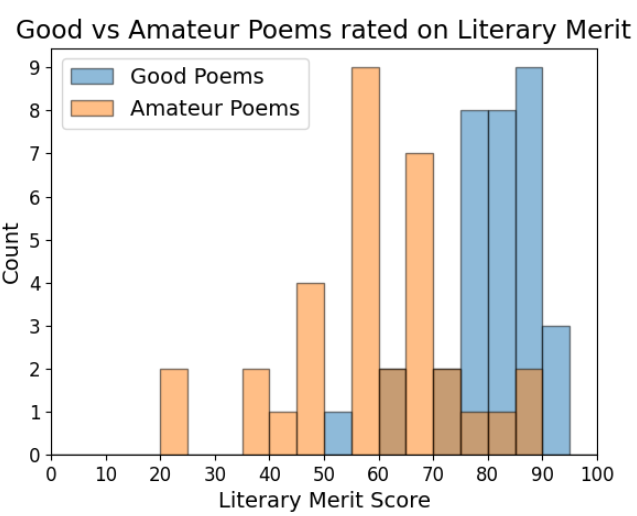
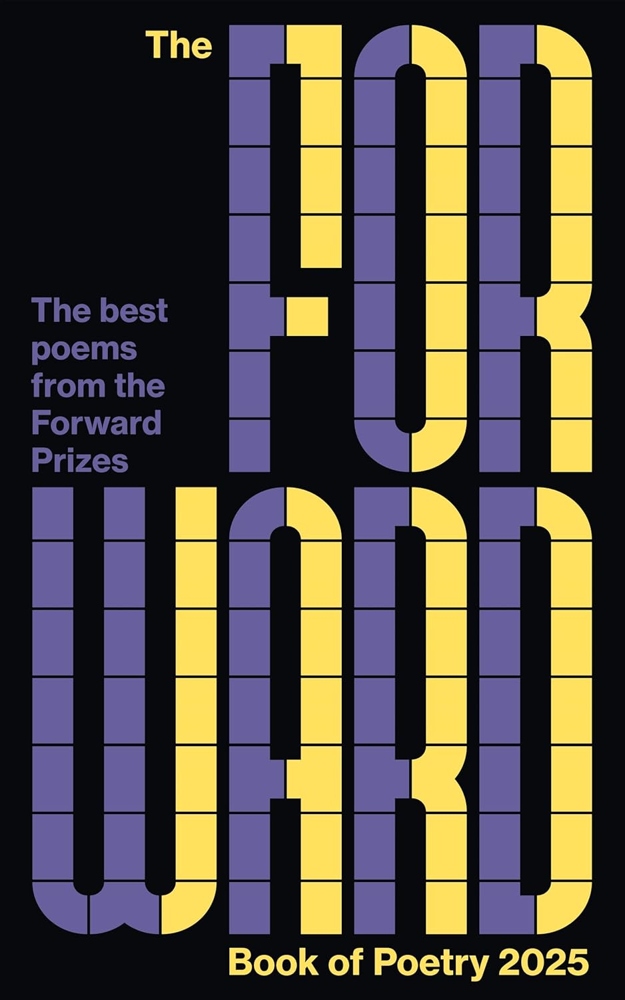
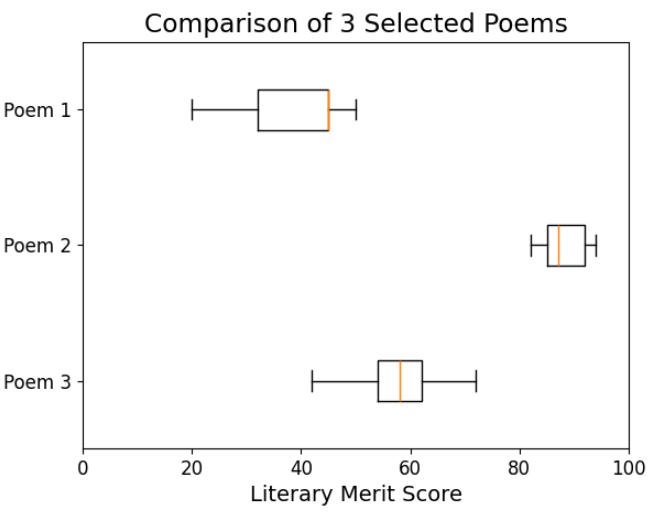

Mirror of Time

This installation was the result of a group project and was exhibited for several days at the V2_ lab for the unstable media.
Visitors would walk up to a gilded frame and a webcam would quickly send a picture of their faces through a repurposed gaming PC
which was hidden behind a curtain. The PC would then run a StyleGAN based aging filter on a picture of the user's face before sending
it to the screen hidden behind the gilded frame. The screen adjusted in near realtime and the viewer would see their face depicted as
older the closer they stepped to the camera. Between the dark lighting and us using a somewhat temperamental algorithm for recognising faces
the results became quite distorted. This gave them an emergent eerie quality that would have been hard to achieve had we set out to do it deliberately.
L-System Gardens

The idea behind this solo project was to leverage so-called Lindenmayer systems in order to programmatically generate visually pleasing drawings of plants.
Previous implementations of L-System code have been mostly for mathematical interest with single plantlike structures being displayed individually.
Using a WYSIWYG editor programmed in Javascript with p5.js, I was able to experiment with the visual effect of layering hundreds of separately
generated L-Systems over each other with some random colour variation. The results look remarkably organic coming from such a simple algorithm.
Rorschach Photography

This project began as a group project with the aim to create a co-creative AI tool, which would be able to assist a human operator during part of the creative process.
We decided it would be interesting to experiment on the basic assumptions behind these sorts of tools and therefore chose to test what would happen if we created a tool which gave ambiguous feedback in the form of a Rorschach blot integrated into a camera screen. The trick was that the participants in our experiment were told that the Rorschach blot relied on a sophisticated AI algorithm via a hoax pamphlet. We of course debriefed them after the experiment was done and revealed the trick, but before we did so we interviewed them about how they had experienced taking pictures with the modified camera. The results of the interviews indicated that an ambiguous system such as the one we built could stimulate creative engagement, but only when participants did not feel like they were under pressure to understand the "right" way to use the system. We presented our research at the 3rd Frictional AI Workshop in 2026.


Exploring Networks in VR

Data that takes the form of a network is often difficult to parse visually. In this group project we wanted to see whether allowing people to
explore networked data by flying through a 3D representation of it in virtual reality would help them to better understand how things were connected.
As our dataset we chose the filmography of Tarantino films along with all the actors who have acted in at least two of them. By connecting each actor
to each film they had acted in a complicated web representing the clique surrounding the director was created. I taught myself how to use Unity to
program an interactive virtual reality system for the (by then already quite old) Oculus Go headset.
Results from user testing were inconclusive and seemed to suggest that, contrary to our expectations, a 2D representation gives an equally vivid understanding of the details of a network.
Wooden Anvils

An apocryphal account of Pythagoras discovering musical harmony by listening to blacksmiths beat on anvils of different sizes inspired this solo project.
I wanted to create a way for two people to discover the interplay of harmony and dissonance while striking objects with hammers. I achieved this by
attaching sensitive accelerometers to chunks of wood and then running the signal from these sensors through an ethernet cable to an Arduino which
would then send the sensor data to a synthesising program known as Pure Data. Extensive research went into synthesising metallic and bell-like sounds
from scratch in order to create an interactive experience where participants could strike the wooden blocks with hammers and hear a metallic ringing sound
from the surrounding speakers as if they had struck a metallic object. The advantage of using hammers was that it allowed the two participants sitting
across from each other in chairs to visually be able to communicate the timings of their strikes.

Can GPT-4o Tell Good and Bad Poetry Apart?

In this experiment I collected a set of professional quality poems from the Forward Book of Poetry and a set of amateur quality poems from r/Poem on Reddit. I made sure that the poems were published after October 2023, which is the knowledge cutoff date for GPT-4o, and then I tasked GPT-4o with assigning scores out of 100 to the poems based on literary merit. It appears that, somehow, LLMs such as GPT-4o are able to do this well enough that the amateur poem scores and the professional poem scores are statistically distinct. The question that needs to be investigated is how are they able to do this? Have they developed a sense of aesthetics or is there some heuristic trick? Could a sufficiently complex heuristic be considered a sense of aesthetics?


LSTM Experiments

These are the outputs of a TenserFlow implementation of an Long Short-Term Memory deep learning model, which is a type of Recurrent Neural Network.
I was intrigued by the flexibility of this system and the fact that it could be coaxed into outputting the answers to simple subtraction and addition
problems as drawings of digits. Here we can see several of these outputs, each collumn with slightly varying model setups. In one case I observed the
impact of decreasing the batch size during training and in another case I observed what happened when more LSTM layers were added either as encoding or
as decoding steps. The ghostly outlines of digits resulting from the models trying to "hedge their bets" are interesting to me as a look into the strange
processes going on within a neural network.